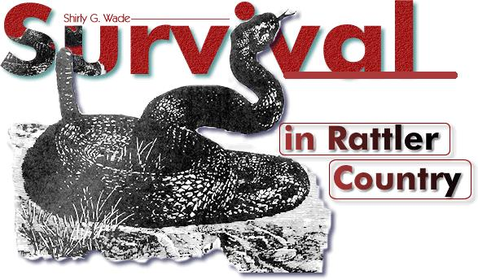

[1] Any king snakes you find around the house and or barn should be encouraged. They'll eat a few eggs or small chicks . . . but they also prey on rattlesnakes.
[2] Most cats and dogs don't care for snakes and will therefore alert you to such a creature's presence. Dogs, however, often get bitten. Guinea hens are supposed to be excellent "snakers" as well as top-notch watch birds
[3] If you're walking in a rattler-infested area, wear long trousers and knee-high boots.
[4] Never put your hands under or into anything if you can't see what else might be there.
[5] Carry-and use-a four or five-foot pole to probe any brush or high grass you go through. The said stick (or a frog gig) can also be very handy for banging snakes to death or for pushing them away from you.
[6] Bullwhips (6-12 feet long) are most effective reptile killers . . . if you're experienced in their handling. Such a whip can be used for cutting, popping or "roping" as with a lariat, but only after a lot of practice.
[7] Stop if you think you hear a rattler. Stand absolutely still until you can see where the sound comes from or otherwise ascertain whether or not there's a snake nearby. Remember, though, this species doesn't always give warning (and other pit vipers can't).
[8] If you spot one snake, watch for another. I've seen plenty of rattlers and never more than one at a time, but it's good to remember this old wives tale . . . just in case.
[9] Out in the countryside, carry a snakebite kit and know how to use it. Specific emergency treatment is covered in most field manuals, survival guides and first aid booklets.
[10] If the worst happens, stay cool and don't panic. A rattler's bite usually isn't deadly . . . but it's not to be taken lightly, either. Get treatment as soon as possible
Shirly G. Wade
Copyright © 2001-2002, Ogden Publications, Inc.
All rights reserved.
|
 |
|
|